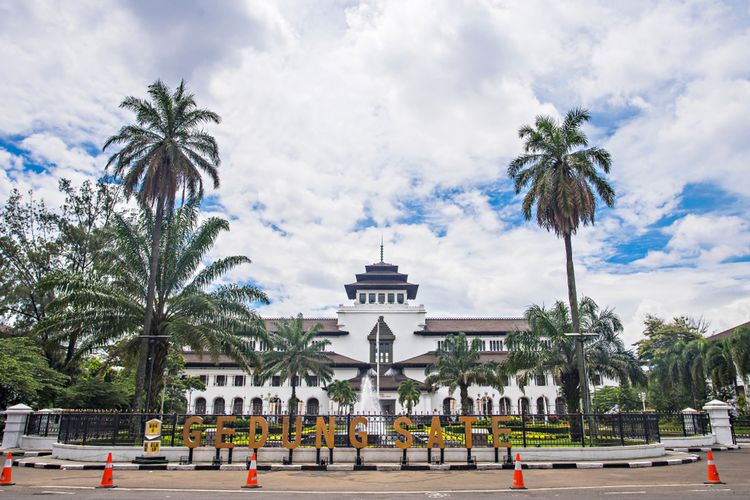

Kota Bandung adalah ibu kota Provinsi Jawa Barat yang sekaligus menjadi pusat pemerintahan dan perekonomian dari Provinsi Jawa Barat, Indonesia. Kota Bandung juga merupakan kota terbesar ketiga di Indonesia setelah Jakarta dan Surabaya. Bandung merupakan kota terpadat kedua di Indonesia setelah Jakarta dengan kepadatan mencapai 15.051 jiwa/km2. Terletak 140 km di sebelah tenggara Jakarta, Bandung merupakan kota terbesar di bagian selatan pulau Jawa. Bandung merupakan bagian dari Cekungan Bandung (Bandung Raya), kawasan metropolitan terbesar ketiga di Indonesia setelah Jabodetabek dan Gerbangkertosusila. Kota Bandung berbatasan langsung dengan Cimahi dan Kabupaten Bandung Barat di sisi barat dan utara;Kabupaten Bandung di sisi timur dan selatan.
